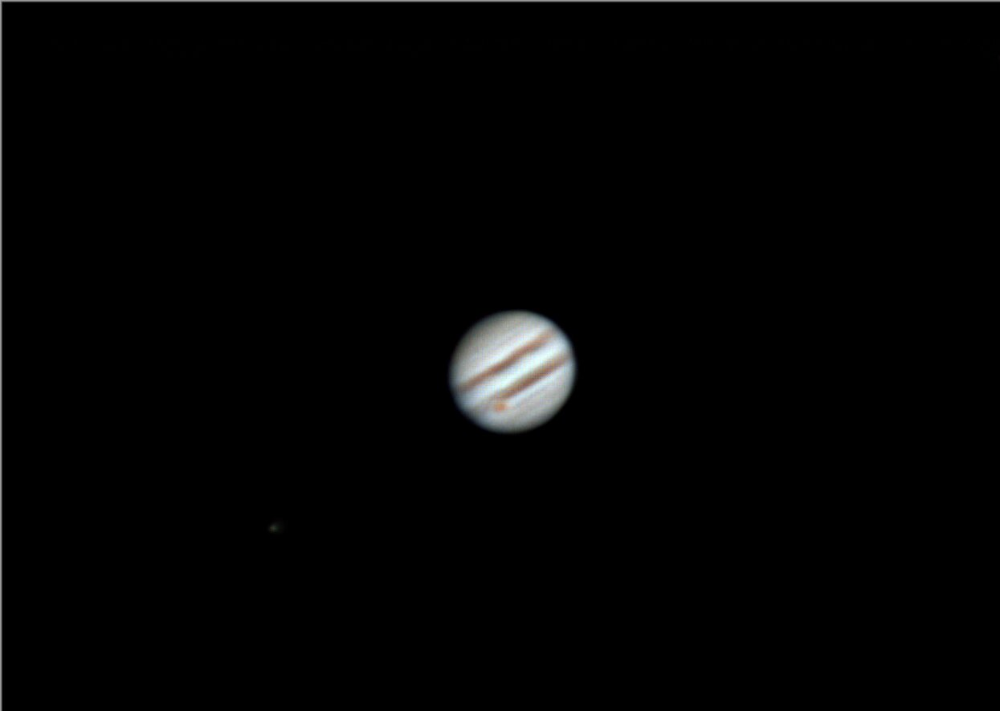
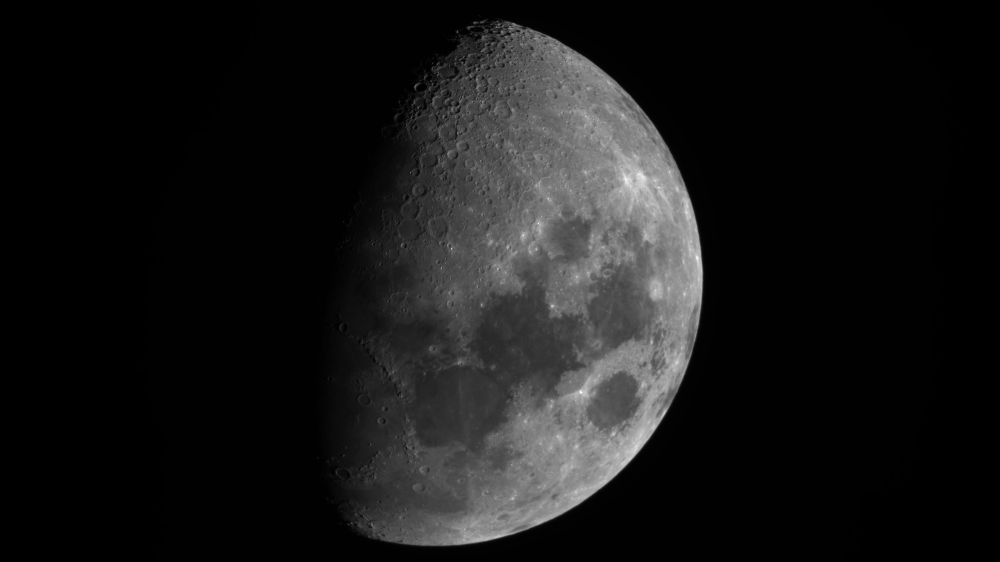
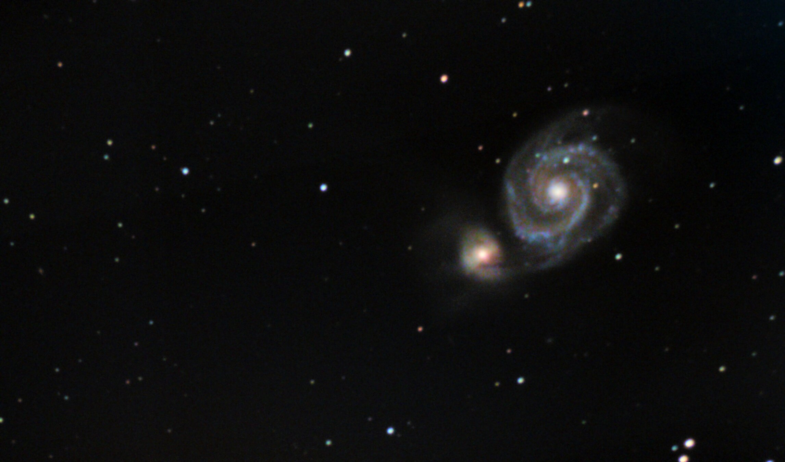
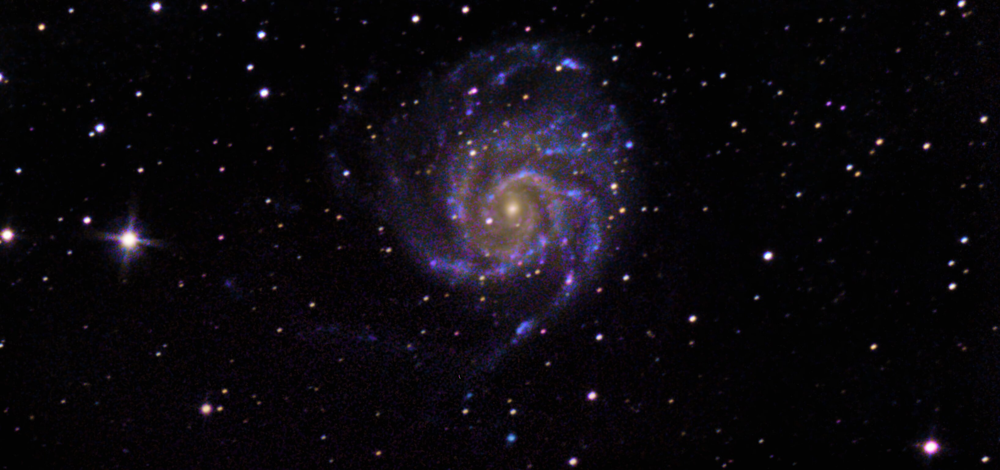
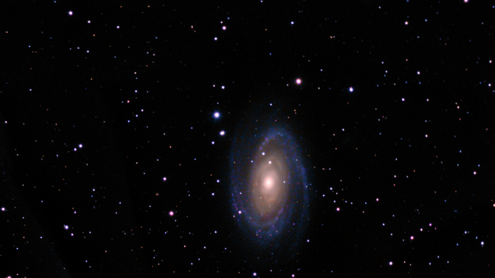
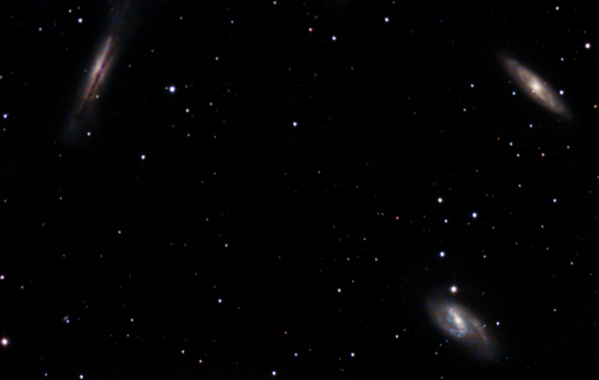

About me
My name is Juraj Plaskoň and I am a student at VUT FIT in Brno. This website showcase my new hobby and that is astrophotography!
Education
Astrophotography
Astrophotography is a type of photography that involves taking pictures of the night sky. It can be used to capture images of stars, planets, and other celestial objects.
How did I start?
I started with astrophotography about a 4 months ago. I wanted to start earlier but I was too busy and also I was hesitating a lot. But after I finally did the purchase and spend the whole night in the garden I know I made a right choice.
Equipment
My telescope is SkyWatcher 130/650 Go2 and my camera is ZWO ASI585MC. In the future, I'm planning to upgrade my mount, because of that I will be able to take longer exposures and that means the overall quality of my photos will be better.
What programs do I use?
For processing
For processing my photos, I use software Siril, GraXpert, RegiStax 6 and also I've tried PixInsight which is amazing but unfortunately not available for free.

For capturing
For capturing my raw photos, I use software ASIStudio, which is a great and very simple tool for capturing the photos. In the future I would like to learn to work with SharpCap.

Gallery
Here you can find some of my photos. I am still learning and I hope that in the future I will be able to take better photos.

Jupiter and Io
Distance: 588 million km
Captured: February 12, 2026

Moon
Distance: 384,400 km
Captured: April 25, 2026

Whirlpool Galaxy (M51)
Distance: 23 million light-years
Captured: February 23, 2026

Pinwheel Galaxy (M101)
Distance: 21 million light-years
Captured: March 15, 2026

Bode's Galaxy (M81)
Distance: 12 million light-years
Captured: March 13, 2026

Leo Triplet (M65, M66, NGC 3628)
Distance: 35 million light-years
Captured: March 7, 2026